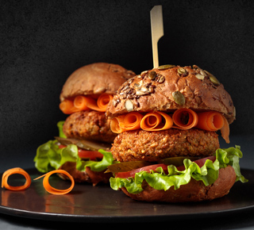

مجله گلستان
بهترین دمنوشهای آرامبخش
فنجانی نوشیدنی گرم میتواند یک عصر زیبا و آرام را برایتان به ارمغان بیاورد. دمنوشهای آرامبخش از ترکیب گیاهان دارویی با خواص فراوان تهیه میشوند
تاکو مکزیکی
یکی از غذاهای معروف مکزیکی تاکو است، تاکو شهرت جهانی دارد و در همه نقاط دنیا طرفداران فراوانی پیدا کرده است. برای تهیه تاکو بسته
آجیل پلو
آجیل پلو، یک غذای هندی هندیها در طعمدار کردن برنج مهارت بالایی دارند. آجیل پلو هم یکی از غذاهای محبوب هندیهاست که در آن از

برگر عدس
اگر دوست دارید که یک برگر گیاهی و کاملاً سالم داشته باشید برگر عدس یک انتخاب مناسب برای شماست. عدس سرشار از پروتئین است و
سوپ مکزیکی
گوشت بوقلمون را در یک ماهیتابه بزرگ ریخته، آب روی آن بریزید تا روی
آن را بپوشاند و به مدت نیم ساعت آن را بپزید. گوشت را از مایع آن
بیرون آورده…
ماکارونی با سبزیجات
ابتدا ماکارانیها را در ظرفی به همراه آب، روغن مایع و نمک
میریزیم تا کمی بپزد. در این حین پیازها را خرد کرده و روی
روغن تفت میدهیم تا طلایی شود…
برنج گلستان
عطر و طعم بینظیر برنج گلستان با هیچ برنج دیگری قابل مقایسه نیست. با گلستان، كیفیت زندگی بالاتر از همیشه است. چرا كه مشتریان گلستان؛ لایق بهترین ها هستند.
اینستاگرام هاتی نودل
نودلهای هاتی كارا را میتوان جایگزین سالمی برای غذاهای فستفودی
دانست. طعم عالی، ارزش غذایی بالا و قیمت مناسب از این محصول غذای
سالم و كاملی ساخته است.
سالاد نودل
نودل هاتی کارا یك میانوعدهی مغذی، در هر موقعیتی كه باشید با كمی آب جوش و یك نودل هاتیكارا میتوانید از یك غذای سالم و خوشمزه لذت ببرید.